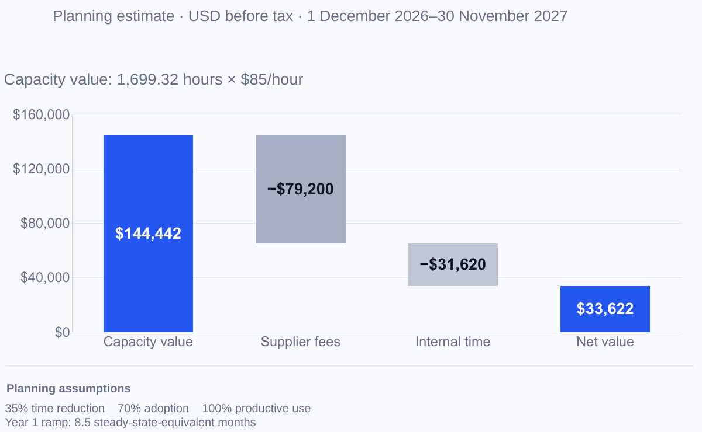

Build AsterVale’s customer presentation from our PPT template, meeting talk track, RFP response and ROI model. Deliver an editable PPTX covering customer goals, the proposed workflow, value and next steps, with presenter notes and a matching PDF for sharing.
Noumi
Found 7 files aligning the customer story with proposal scope, planning value and next decisions.
- Slide design: Noumi_Customer_Presentation_Template.pptx
- Customer goals:
 AsterVale_Opportunity_Brief.md
AsterVale_Opportunity_Brief.md - Capability boundaries: Noumi_Product_Capabilities.md
- Proposal scope:
 AsterVale_RFP_Response_v1.1_Controlled_Draft.docx
AsterVale_RFP_Response_v1.1_Controlled_Draft.docx - Meeting sequence: AsterVale_Evaluation_Meeting_Agenda_and_Talk_Track_v1.1.docx
- Value and sensitivity:
 AsterVale_ROI_Model.xlsx
AsterVale_ROI_Model.xlsx - Readiness owners: AsterVale_Mutual_Action_Plan.xlsx
Noumi used your saved preference

Slide 10 keeps “Planning estimate”, value and the 35% / 70% / 100% assumptions on the same page.
Keep the assumptions close to value figures and retain the “Planning estimate” label in customer slides.
DONECompleted
7 source files selected · 2 deliverables shown. Previews below are rendered from the supplied files.
Prepared a 14-slide editable PPTX with presenter notes and a matching PDF for the joint customer evaluation.
Focus: slide 10 keeps the Planning estimate label and assumptions beside the value; slide 11 shows productive-use sensitivity.
The closing slides set out the proposed pilot, evidence requirements and approval owners before expansion to 60 users.
Next: rehearse with the meeting talk track, confirm the open terms and use the deck to agree pilot readiness with the customer.